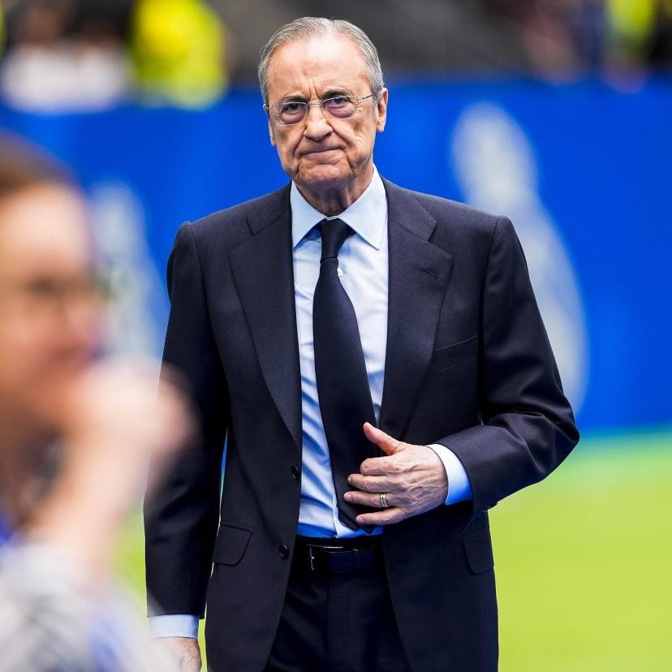
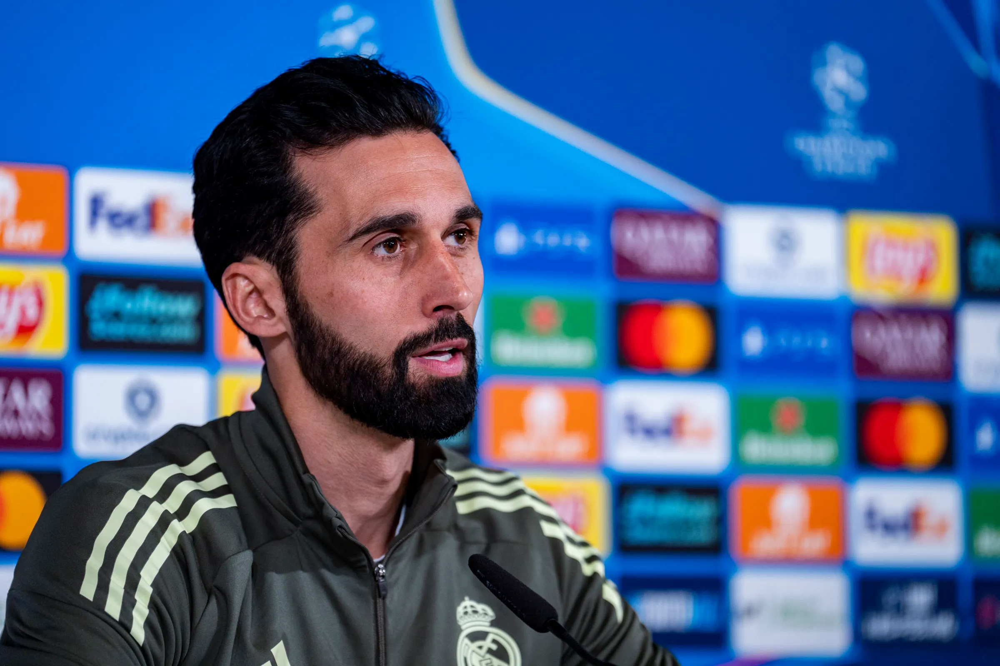
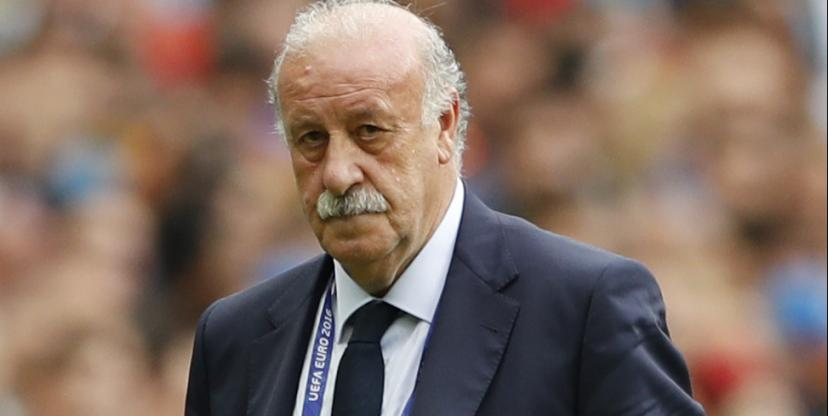
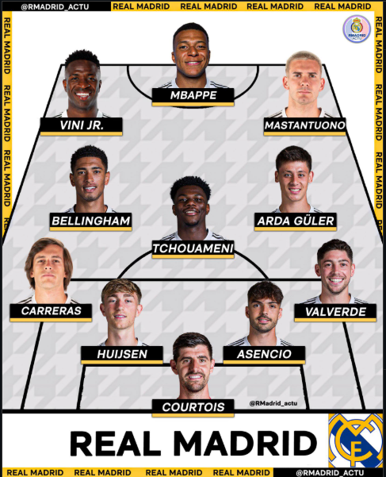
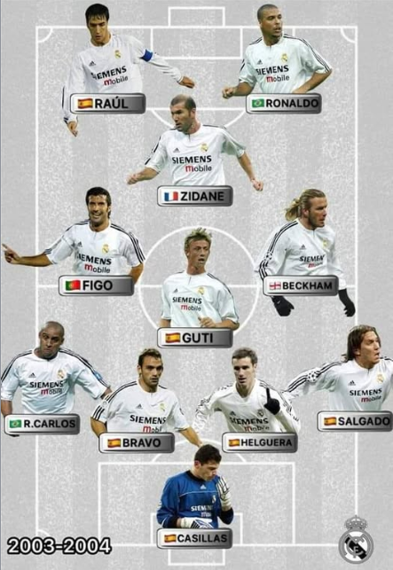

Florentino Pérez

Florentino Pérez est l’une des figures les plus influentes de l’histoire récente du Real Madrid...
Le Real Madrid Club de Fútbol est l’un des clubs les plus emblématiques de l’histoire du football...

Florentino Pérez est l’une des figures les plus influentes de l’histoire récente du Real Madrid...

Álvaro Arbeloa est aujourd’hui l’entraîneur de l’équipe première du Real Madrid...





L’équipe actuelle du Real Madrid mêle jeunesse, intensité et créativité...

Le Real Madrid a connu plusieurs générations légendaires...